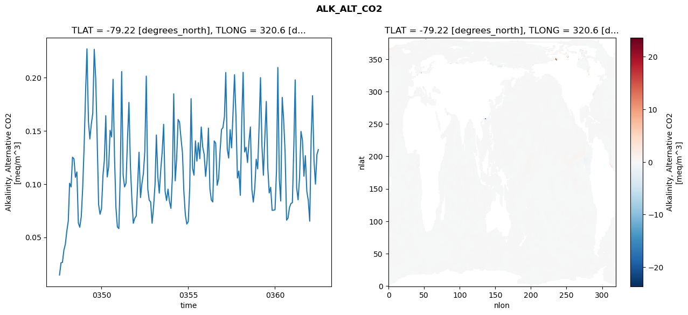
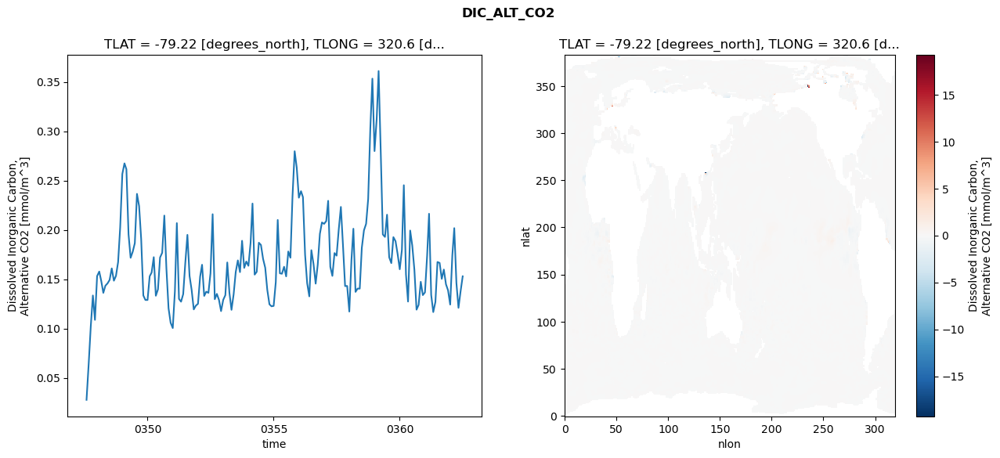
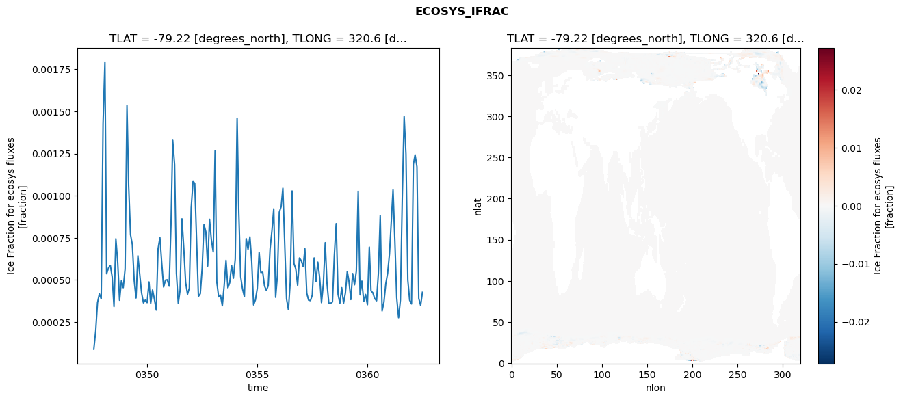
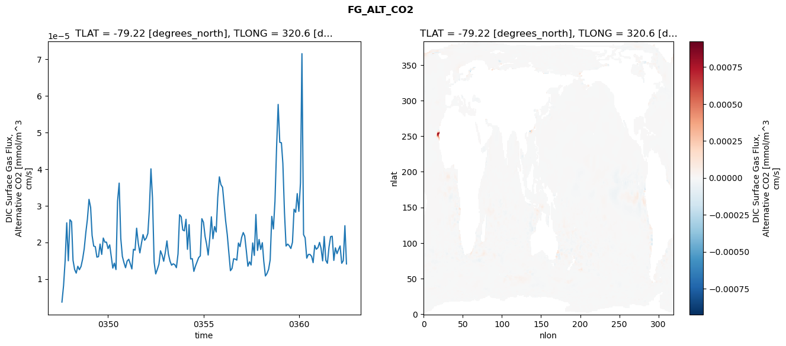

glb-dor_North_Atlantic_basin_044_1999-07-01_00178#
Simulation details#
Case: smyle.cdr-atlas-v0.glb-dor_North_Atlantic_basin_044_1999-07-01_00178.001
Basin: North_Atlantic_basin
Polygon: 44.0
Start date: 1999-07
Show code cell source Hide code cell source
import xarray as xr
import matplotlib.pyplot as plt
Show code cell source Hide code cell source
zarr_store = "/path/to/zarr/store"
# Parameters
zarr_store = "/global/cfs/projectdirs/m4746/Projects/Ocean-CDR-Atlas-v0/data/validation/smyle.cdr-atlas-v0.glb-dor_North_Atlantic_basin_044_1999-07-01_00178.001.validation.zarr"
Show code cell source Hide code cell source
%%time
ds_o = xr.open_zarr(zarr_store).compute()
ds_o
CPU times: user 647 ms, sys: 431 ms, total: 1.08 s
Wall time: 1.3 s
<xarray.Dataset> Size: 2MB
Dimensions: (nlat: 384, nlon: 320, time: 180)
Coordinates:
TLAT float64 8B -79.22
TLONG float64 8B 320.6
ULAT float64 8B -78.95
ULONG float64 8B 321.1
* time (time) object 1kB 0347-08-01 00:00:00 ... 0362-07-01 0...
z_t float32 4B 500.0
Dimensions without coordinates: nlat, nlon
Data variables:
ALK_ALT_CO2_diff (nlat, nlon) float32 492kB nan nan nan ... nan nan nan
ALK_ALT_CO2_rmse (time) float64 1kB 0.0145 0.02594 ... 0.1277 0.1324
DIC_ALT_CO2_diff (nlat, nlon) float32 492kB nan nan nan ... nan nan nan
DIC_ALT_CO2_rmse (time) float64 1kB 0.02764 0.0639 0.1017 ... 0.138 0.1529
ECOSYS_IFRAC_diff (nlat, nlon) float32 492kB nan nan nan ... nan nan nan
ECOSYS_IFRAC_rmse (time) float64 1kB 8.825e-05 0.0001968 ... 0.0004263
FG_ALT_CO2_diff (nlat, nlon) float32 492kB nan nan nan ... nan nan nan
FG_ALT_CO2_rmse (time) float64 1kB 3.666e-06 8.16e-06 ... 1.409e-05xarray.Dataset
- nlat: 384
- nlon: 320
- time: 180
- TLAT()float64-79.22
- long_name :
- array of t-grid latitudes
- units :
- degrees_north
array(-79.22052261)
- TLONG()float64320.6
- long_name :
- array of t-grid longitudes
- units :
- degrees_east
array(320.56250892)
- ULAT()float64-78.95
- long_name :
- array of u-grid latitudes
- units :
- degrees_north
array(-78.95289509)
- ULONG()float64321.1
- long_name :
- array of u-grid longitudes
- units :
- degrees_east
array(321.12500894)
- time(time)object0347-08-01 00:00:00 ... 0362-07-...
- bounds :
- time_bound
- long_name :
- time
array([cftime.DatetimeNoLeap(347, 8, 1, 0, 0, 0, 0, has_year_zero=True), cftime.DatetimeNoLeap(347, 9, 1, 0, 0, 0, 0, has_year_zero=True), cftime.DatetimeNoLeap(347, 10, 1, 0, 0, 0, 0, has_year_zero=True), cftime.DatetimeNoLeap(347, 11, 1, 0, 0, 0, 0, has_year_zero=True), cftime.DatetimeNoLeap(347, 12, 1, 0, 0, 0, 0, has_year_zero=True), cftime.DatetimeNoLeap(348, 1, 1, 0, 0, 0, 0, has_year_zero=True), cftime.DatetimeNoLeap(348, 2, 1, 0, 0, 0, 0, has_year_zero=True), cftime.DatetimeNoLeap(348, 3, 1, 0, 0, 0, 0, has_year_zero=True), cftime.DatetimeNoLeap(348, 4, 1, 0, 0, 0, 0, has_year_zero=True), cftime.DatetimeNoLeap(348, 5, 1, 0, 0, 0, 0, has_year_zero=True), cftime.DatetimeNoLeap(348, 6, 1, 0, 0, 0, 0, has_year_zero=True), cftime.DatetimeNoLeap(348, 7, 1, 0, 0, 0, 0, has_year_zero=True), cftime.DatetimeNoLeap(348, 8, 1, 0, 0, 0, 0, has_year_zero=True), cftime.DatetimeNoLeap(348, 9, 1, 0, 0, 0, 0, has_year_zero=True), cftime.DatetimeNoLeap(348, 10, 1, 0, 0, 0, 0, has_year_zero=True), cftime.DatetimeNoLeap(348, 11, 1, 0, 0, 0, 0, has_year_zero=True), cftime.DatetimeNoLeap(348, 12, 1, 0, 0, 0, 0, has_year_zero=True), cftime.DatetimeNoLeap(349, 1, 1, 0, 0, 0, 0, has_year_zero=True), cftime.DatetimeNoLeap(349, 2, 1, 0, 0, 0, 0, has_year_zero=True), cftime.DatetimeNoLeap(349, 3, 1, 0, 0, 0, 0, has_year_zero=True), cftime.DatetimeNoLeap(349, 4, 1, 0, 0, 0, 0, has_year_zero=True), cftime.DatetimeNoLeap(349, 5, 1, 0, 0, 0, 0, has_year_zero=True), cftime.DatetimeNoLeap(349, 6, 1, 0, 0, 0, 0, has_year_zero=True), cftime.DatetimeNoLeap(349, 7, 1, 0, 0, 0, 0, has_year_zero=True), cftime.DatetimeNoLeap(349, 8, 1, 0, 0, 0, 0, has_year_zero=True), cftime.DatetimeNoLeap(349, 9, 1, 0, 0, 0, 0, has_year_zero=True), cftime.DatetimeNoLeap(349, 10, 1, 0, 0, 0, 0, has_year_zero=True), cftime.DatetimeNoLeap(349, 11, 1, 0, 0, 0, 0, has_year_zero=True), cftime.DatetimeNoLeap(349, 12, 1, 0, 0, 0, 0, has_year_zero=True), cftime.DatetimeNoLeap(350, 1, 1, 0, 0, 0, 0, has_year_zero=True), cftime.DatetimeNoLeap(350, 2, 1, 0, 0, 0, 0, has_year_zero=True), cftime.DatetimeNoLeap(350, 3, 1, 0, 0, 0, 0, has_year_zero=True), cftime.DatetimeNoLeap(350, 4, 1, 0, 0, 0, 0, has_year_zero=True), cftime.DatetimeNoLeap(350, 5, 1, 0, 0, 0, 0, has_year_zero=True), cftime.DatetimeNoLeap(350, 6, 1, 0, 0, 0, 0, has_year_zero=True), cftime.DatetimeNoLeap(350, 7, 1, 0, 0, 0, 0, has_year_zero=True), cftime.DatetimeNoLeap(350, 8, 1, 0, 0, 0, 0, has_year_zero=True), cftime.DatetimeNoLeap(350, 9, 1, 0, 0, 0, 0, has_year_zero=True), cftime.DatetimeNoLeap(350, 10, 1, 0, 0, 0, 0, has_year_zero=True), cftime.DatetimeNoLeap(350, 11, 1, 0, 0, 0, 0, has_year_zero=True), cftime.DatetimeNoLeap(350, 12, 1, 0, 0, 0, 0, has_year_zero=True), cftime.DatetimeNoLeap(351, 1, 1, 0, 0, 0, 0, has_year_zero=True), cftime.DatetimeNoLeap(351, 2, 1, 0, 0, 0, 0, has_year_zero=True), cftime.DatetimeNoLeap(351, 3, 1, 0, 0, 0, 0, has_year_zero=True), cftime.DatetimeNoLeap(351, 4, 1, 0, 0, 0, 0, has_year_zero=True), cftime.DatetimeNoLeap(351, 5, 1, 0, 0, 0, 0, has_year_zero=True), cftime.DatetimeNoLeap(351, 6, 1, 0, 0, 0, 0, has_year_zero=True), cftime.DatetimeNoLeap(351, 7, 1, 0, 0, 0, 0, has_year_zero=True), cftime.DatetimeNoLeap(351, 8, 1, 0, 0, 0, 0, has_year_zero=True), cftime.DatetimeNoLeap(351, 9, 1, 0, 0, 0, 0, has_year_zero=True), cftime.DatetimeNoLeap(351, 10, 1, 0, 0, 0, 0, has_year_zero=True), cftime.DatetimeNoLeap(351, 11, 1, 0, 0, 0, 0, has_year_zero=True), cftime.DatetimeNoLeap(351, 12, 1, 0, 0, 0, 0, has_year_zero=True), cftime.DatetimeNoLeap(352, 1, 1, 0, 0, 0, 0, has_year_zero=True), cftime.DatetimeNoLeap(352, 2, 1, 0, 0, 0, 0, has_year_zero=True), cftime.DatetimeNoLeap(352, 3, 1, 0, 0, 0, 0, has_year_zero=True), cftime.DatetimeNoLeap(352, 4, 1, 0, 0, 0, 0, has_year_zero=True), cftime.DatetimeNoLeap(352, 5, 1, 0, 0, 0, 0, has_year_zero=True), cftime.DatetimeNoLeap(352, 6, 1, 0, 0, 0, 0, has_year_zero=True), cftime.DatetimeNoLeap(352, 7, 1, 0, 0, 0, 0, has_year_zero=True), cftime.DatetimeNoLeap(352, 8, 1, 0, 0, 0, 0, has_year_zero=True), cftime.DatetimeNoLeap(352, 9, 1, 0, 0, 0, 0, has_year_zero=True), cftime.DatetimeNoLeap(352, 10, 1, 0, 0, 0, 0, has_year_zero=True), cftime.DatetimeNoLeap(352, 11, 1, 0, 0, 0, 0, has_year_zero=True), cftime.DatetimeNoLeap(352, 12, 1, 0, 0, 0, 0, has_year_zero=True), cftime.DatetimeNoLeap(353, 1, 1, 0, 0, 0, 0, has_year_zero=True), cftime.DatetimeNoLeap(353, 2, 1, 0, 0, 0, 0, has_year_zero=True), cftime.DatetimeNoLeap(353, 3, 1, 0, 0, 0, 0, has_year_zero=True), cftime.DatetimeNoLeap(353, 4, 1, 0, 0, 0, 0, has_year_zero=True), cftime.DatetimeNoLeap(353, 5, 1, 0, 0, 0, 0, has_year_zero=True), cftime.DatetimeNoLeap(353, 6, 1, 0, 0, 0, 0, has_year_zero=True), cftime.DatetimeNoLeap(353, 7, 1, 0, 0, 0, 0, has_year_zero=True), cftime.DatetimeNoLeap(353, 8, 1, 0, 0, 0, 0, has_year_zero=True), cftime.DatetimeNoLeap(353, 9, 1, 0, 0, 0, 0, has_year_zero=True), cftime.DatetimeNoLeap(353, 10, 1, 0, 0, 0, 0, has_year_zero=True), cftime.DatetimeNoLeap(353, 11, 1, 0, 0, 0, 0, has_year_zero=True), cftime.DatetimeNoLeap(353, 12, 1, 0, 0, 0, 0, has_year_zero=True), cftime.DatetimeNoLeap(354, 1, 1, 0, 0, 0, 0, has_year_zero=True), cftime.DatetimeNoLeap(354, 2, 1, 0, 0, 0, 0, has_year_zero=True), cftime.DatetimeNoLeap(354, 3, 1, 0, 0, 0, 0, has_year_zero=True), cftime.DatetimeNoLeap(354, 4, 1, 0, 0, 0, 0, has_year_zero=True), cftime.DatetimeNoLeap(354, 5, 1, 0, 0, 0, 0, has_year_zero=True), cftime.DatetimeNoLeap(354, 6, 1, 0, 0, 0, 0, has_year_zero=True), cftime.DatetimeNoLeap(354, 7, 1, 0, 0, 0, 0, has_year_zero=True), cftime.DatetimeNoLeap(354, 8, 1, 0, 0, 0, 0, has_year_zero=True), cftime.DatetimeNoLeap(354, 9, 1, 0, 0, 0, 0, has_year_zero=True), cftime.DatetimeNoLeap(354, 10, 1, 0, 0, 0, 0, has_year_zero=True), cftime.DatetimeNoLeap(354, 11, 1, 0, 0, 0, 0, has_year_zero=True), cftime.DatetimeNoLeap(354, 12, 1, 0, 0, 0, 0, has_year_zero=True), cftime.DatetimeNoLeap(355, 1, 1, 0, 0, 0, 0, has_year_zero=True), cftime.DatetimeNoLeap(355, 2, 1, 0, 0, 0, 0, has_year_zero=True), cftime.DatetimeNoLeap(355, 3, 1, 0, 0, 0, 0, has_year_zero=True), cftime.DatetimeNoLeap(355, 4, 1, 0, 0, 0, 0, has_year_zero=True), cftime.DatetimeNoLeap(355, 5, 1, 0, 0, 0, 0, has_year_zero=True), cftime.DatetimeNoLeap(355, 6, 1, 0, 0, 0, 0, has_year_zero=True), cftime.DatetimeNoLeap(355, 7, 1, 0, 0, 0, 0, has_year_zero=True), cftime.DatetimeNoLeap(355, 8, 1, 0, 0, 0, 0, has_year_zero=True), cftime.DatetimeNoLeap(355, 9, 1, 0, 0, 0, 0, has_year_zero=True), cftime.DatetimeNoLeap(355, 10, 1, 0, 0, 0, 0, has_year_zero=True), cftime.DatetimeNoLeap(355, 11, 1, 0, 0, 0, 0, has_year_zero=True), cftime.DatetimeNoLeap(355, 12, 1, 0, 0, 0, 0, has_year_zero=True), cftime.DatetimeNoLeap(356, 1, 1, 0, 0, 0, 0, has_year_zero=True), cftime.DatetimeNoLeap(356, 2, 1, 0, 0, 0, 0, has_year_zero=True), cftime.DatetimeNoLeap(356, 3, 1, 0, 0, 0, 0, has_year_zero=True), cftime.DatetimeNoLeap(356, 4, 1, 0, 0, 0, 0, has_year_zero=True), cftime.DatetimeNoLeap(356, 5, 1, 0, 0, 0, 0, has_year_zero=True), cftime.DatetimeNoLeap(356, 6, 1, 0, 0, 0, 0, has_year_zero=True), cftime.DatetimeNoLeap(356, 7, 1, 0, 0, 0, 0, has_year_zero=True), cftime.DatetimeNoLeap(356, 8, 1, 0, 0, 0, 0, has_year_zero=True), cftime.DatetimeNoLeap(356, 9, 1, 0, 0, 0, 0, has_year_zero=True), cftime.DatetimeNoLeap(356, 10, 1, 0, 0, 0, 0, has_year_zero=True), cftime.DatetimeNoLeap(356, 11, 1, 0, 0, 0, 0, has_year_zero=True), cftime.DatetimeNoLeap(356, 12, 1, 0, 0, 0, 0, has_year_zero=True), cftime.DatetimeNoLeap(357, 1, 1, 0, 0, 0, 0, has_year_zero=True), cftime.DatetimeNoLeap(357, 2, 1, 0, 0, 0, 0, has_year_zero=True), cftime.DatetimeNoLeap(357, 3, 1, 0, 0, 0, 0, has_year_zero=True), cftime.DatetimeNoLeap(357, 4, 1, 0, 0, 0, 0, has_year_zero=True), cftime.DatetimeNoLeap(357, 5, 1, 0, 0, 0, 0, has_year_zero=True), cftime.DatetimeNoLeap(357, 6, 1, 0, 0, 0, 0, has_year_zero=True), cftime.DatetimeNoLeap(357, 7, 1, 0, 0, 0, 0, has_year_zero=True), cftime.DatetimeNoLeap(357, 8, 1, 0, 0, 0, 0, has_year_zero=True), cftime.DatetimeNoLeap(357, 9, 1, 0, 0, 0, 0, has_year_zero=True), cftime.DatetimeNoLeap(357, 10, 1, 0, 0, 0, 0, has_year_zero=True), cftime.DatetimeNoLeap(357, 11, 1, 0, 0, 0, 0, has_year_zero=True), cftime.DatetimeNoLeap(357, 12, 1, 0, 0, 0, 0, has_year_zero=True), cftime.DatetimeNoLeap(358, 1, 1, 0, 0, 0, 0, has_year_zero=True), cftime.DatetimeNoLeap(358, 2, 1, 0, 0, 0, 0, has_year_zero=True), cftime.DatetimeNoLeap(358, 3, 1, 0, 0, 0, 0, has_year_zero=True), cftime.DatetimeNoLeap(358, 4, 1, 0, 0, 0, 0, has_year_zero=True), cftime.DatetimeNoLeap(358, 5, 1, 0, 0, 0, 0, has_year_zero=True), cftime.DatetimeNoLeap(358, 6, 1, 0, 0, 0, 0, has_year_zero=True), cftime.DatetimeNoLeap(358, 7, 1, 0, 0, 0, 0, has_year_zero=True), cftime.DatetimeNoLeap(358, 8, 1, 0, 0, 0, 0, has_year_zero=True), cftime.DatetimeNoLeap(358, 9, 1, 0, 0, 0, 0, has_year_zero=True), cftime.DatetimeNoLeap(358, 10, 1, 0, 0, 0, 0, has_year_zero=True), cftime.DatetimeNoLeap(358, 11, 1, 0, 0, 0, 0, has_year_zero=True), cftime.DatetimeNoLeap(358, 12, 1, 0, 0, 0, 0, has_year_zero=True), cftime.DatetimeNoLeap(359, 1, 1, 0, 0, 0, 0, has_year_zero=True), cftime.DatetimeNoLeap(359, 2, 1, 0, 0, 0, 0, has_year_zero=True), cftime.DatetimeNoLeap(359, 3, 1, 0, 0, 0, 0, has_year_zero=True), cftime.DatetimeNoLeap(359, 4, 1, 0, 0, 0, 0, has_year_zero=True), cftime.DatetimeNoLeap(359, 5, 1, 0, 0, 0, 0, has_year_zero=True), cftime.DatetimeNoLeap(359, 6, 1, 0, 0, 0, 0, has_year_zero=True), cftime.DatetimeNoLeap(359, 7, 1, 0, 0, 0, 0, has_year_zero=True), cftime.DatetimeNoLeap(359, 8, 1, 0, 0, 0, 0, has_year_zero=True), cftime.DatetimeNoLeap(359, 9, 1, 0, 0, 0, 0, has_year_zero=True), cftime.DatetimeNoLeap(359, 10, 1, 0, 0, 0, 0, has_year_zero=True), cftime.DatetimeNoLeap(359, 11, 1, 0, 0, 0, 0, has_year_zero=True), cftime.DatetimeNoLeap(359, 12, 1, 0, 0, 0, 0, has_year_zero=True), cftime.DatetimeNoLeap(360, 1, 1, 0, 0, 0, 0, has_year_zero=True), cftime.DatetimeNoLeap(360, 2, 1, 0, 0, 0, 0, has_year_zero=True), cftime.DatetimeNoLeap(360, 3, 1, 0, 0, 0, 0, has_year_zero=True), cftime.DatetimeNoLeap(360, 4, 1, 0, 0, 0, 0, has_year_zero=True), cftime.DatetimeNoLeap(360, 5, 1, 0, 0, 0, 0, has_year_zero=True), cftime.DatetimeNoLeap(360, 6, 1, 0, 0, 0, 0, has_year_zero=True), cftime.DatetimeNoLeap(360, 7, 1, 0, 0, 0, 0, has_year_zero=True), cftime.DatetimeNoLeap(360, 8, 1, 0, 0, 0, 0, has_year_zero=True), cftime.DatetimeNoLeap(360, 9, 1, 0, 0, 0, 0, has_year_zero=True), cftime.DatetimeNoLeap(360, 10, 1, 0, 0, 0, 0, has_year_zero=True), cftime.DatetimeNoLeap(360, 11, 1, 0, 0, 0, 0, has_year_zero=True), cftime.DatetimeNoLeap(360, 12, 1, 0, 0, 0, 0, has_year_zero=True), cftime.DatetimeNoLeap(361, 1, 1, 0, 0, 0, 0, has_year_zero=True), cftime.DatetimeNoLeap(361, 2, 1, 0, 0, 0, 0, has_year_zero=True), cftime.DatetimeNoLeap(361, 3, 1, 0, 0, 0, 0, has_year_zero=True), cftime.DatetimeNoLeap(361, 4, 1, 0, 0, 0, 0, has_year_zero=True), cftime.DatetimeNoLeap(361, 5, 1, 0, 0, 0, 0, has_year_zero=True), cftime.DatetimeNoLeap(361, 6, 1, 0, 0, 0, 0, has_year_zero=True), cftime.DatetimeNoLeap(361, 7, 1, 0, 0, 0, 0, has_year_zero=True), cftime.DatetimeNoLeap(361, 8, 1, 0, 0, 0, 0, has_year_zero=True), cftime.DatetimeNoLeap(361, 9, 1, 0, 0, 0, 0, has_year_zero=True), cftime.DatetimeNoLeap(361, 10, 1, 0, 0, 0, 0, has_year_zero=True), cftime.DatetimeNoLeap(361, 11, 1, 0, 0, 0, 0, has_year_zero=True), cftime.DatetimeNoLeap(361, 12, 1, 0, 0, 0, 0, has_year_zero=True), cftime.DatetimeNoLeap(362, 1, 1, 0, 0, 0, 0, has_year_zero=True), cftime.DatetimeNoLeap(362, 2, 1, 0, 0, 0, 0, has_year_zero=True), cftime.DatetimeNoLeap(362, 3, 1, 0, 0, 0, 0, has_year_zero=True), cftime.DatetimeNoLeap(362, 4, 1, 0, 0, 0, 0, has_year_zero=True), cftime.DatetimeNoLeap(362, 5, 1, 0, 0, 0, 0, has_year_zero=True), cftime.DatetimeNoLeap(362, 6, 1, 0, 0, 0, 0, has_year_zero=True), cftime.DatetimeNoLeap(362, 7, 1, 0, 0, 0, 0, has_year_zero=True)], dtype=object) - z_t()float32500.0
- long_name :
- depth from surface to midpoint of layer
- positive :
- down
- units :
- centimeters
- valid_max :
- 537500.0
- valid_min :
- 500.0
array(500., dtype=float32)
- ALK_ALT_CO2_diff(nlat, nlon)float32nan nan nan nan ... nan nan nan nan
- cell_methods :
- time: mean
- grid_loc :
- 3111
- long_name :
- Alkalinity, Alternative CO2
- units :
- meq/m^3
array([[ nan, nan, nan, ..., nan, nan, nan], [ nan, nan, nan, ..., nan, nan, nan], [0.02197266, 0.00854492, 0.01147461, ..., nan, nan, nan], ..., [ nan, nan, nan, ..., nan, nan, nan], [ nan, nan, nan, ..., nan, nan, nan], [ nan, nan, nan, ..., nan, nan, nan]], dtype=float32) - ALK_ALT_CO2_rmse(time)float640.0145 0.02594 ... 0.1277 0.1324
- cell_methods :
- time: mean
- grid_loc :
- 3111
- long_name :
- Alkalinity, Alternative CO2
- units :
- meq/m^3
array([0.0144981 , 0.02593875, 0.02639596, 0.03796317, 0.04337623, 0.05568589, 0.06532632, 0.10074951, 0.09734561, 0.12526831, 0.12371002, 0.10635839, 0.11139627, 0.0633397 , 0.05941757, 0.06935446, 0.09652728, 0.13630706, 0.18745648, 0.22710894, 0.15867094, 0.14240468, 0.15650351, 0.16652195, 0.22665092, 0.19906829, 0.14405175, 0.08079013, 0.07166129, 0.07682478, 0.10835193, 0.12210025, 0.16424248, 0.10668669, 0.11615174, 0.15043853, 0.14433195, 0.19846066, 0.12652598, 0.07746832, 0.05968057, 0.05815547, 0.11076494, 0.20575868, 0.10832192, 0.09735462, 0.10083668, 0.14124026, 0.17673827, 0.11705289, 0.08659132, 0.06314011, 0.06782695, 0.06996684, 0.10049693, 0.1298754 , 0.08728129, 0.1004086 , 0.10991667, 0.13088828, 0.20143924, 0.0954788 , 0.08486953, 0.08308462, 0.06315993, 0.07836645, 0.09967577, 0.14609901, 0.10693886, 0.09148742, 0.11327061, 0.12999723, 0.15613734, 0.09314712, 0.08456606, 0.09522434, 0.08374293, 0.07717377, 0.10703094, 0.18480299, 0.10305308, 0.12323023, 0.16068581, 0.15829376, 0.14295098, 0.12920736, 0.09253638, 0.07097335, 0.06243033, 0.06470888, 0.0971266 , 0.18025315, 0.11486876, 0.10838284, 0.140606 , 0.1215614 , 0.13883511, 0.12384121, 0.15361456, 0.13486369, 0.12791377, 0.10723517, 0.12220107, 0.15258921, 0.09569523, 0.08503548, 0.08318058, 0.14054659, 0.13835189, 0.09890815, 0.10484253, 0.13102125, 0.15121792, 0.15319843, 0.16367585, 0.20486551, 0.13286701, 0.12443958, 0.15107363, 0.13403763, 0.16758451, 0.20278428, 0.163898 , 0.10569808, 0.11224176, 0.089401 , 0.16122285, 0.2050319 , 0.13018979, 0.1346059 , 0.12027209, 0.1395706 , 0.15362707, 0.09485314, 0.08308752, 0.09617932, 0.12330353, 0.11430403, 0.15522506, 0.20005039, 0.13570899, 0.10829706, 0.14449689, 0.17765926, 0.11585084, 0.09161334, 0.09698468, 0.07528981, 0.07543173, 0.07586192, 0.11300111, 0.20959836, 0.10461877, 0.08405332, 0.18142706, 0.16062688, 0.12961842, 0.06603275, 0.06803169, 0.07798338, 0.08172369, 0.08248935, 0.13653361, 0.19794163, 0.09645783, 0.08519991, 0.10641081, 0.14944291, 0.14117341, 0.10736076, 0.12670211, 0.09309561, 0.08475159, 0.0651005 , 0.14581083, 0.18304505, 0.12202705, 0.09994692, 0.12774688, 0.13235519]) - DIC_ALT_CO2_diff(nlat, nlon)float32nan nan nan nan ... nan nan nan nan
- cell_methods :
- time: mean
- grid_loc :
- 3111
- long_name :
- Dissolved Inorganic Carbon, Alternative CO2
- units :
- mmol/m^3
array([[ nan, nan, nan, ..., nan, nan, nan], [ nan, nan, nan, ..., nan, nan, nan], [0.02099609, 0.00927734, 0.00585938, ..., nan, nan, nan], ..., [ nan, nan, nan, ..., nan, nan, nan], [ nan, nan, nan, ..., nan, nan, nan], [ nan, nan, nan, ..., nan, nan, nan]], dtype=float32) - DIC_ALT_CO2_rmse(time)float640.02764 0.0639 ... 0.138 0.1529
- cell_methods :
- time: mean
- grid_loc :
- 3111
- long_name :
- Dissolved Inorganic Carbon, Alternative CO2
- units :
- mmol/m^3
array([0.02763885, 0.0638964 , 0.10173446, 0.13346225, 0.10873559, 0.15313404, 0.15773195, 0.14855341, 0.13612443, 0.14337774, 0.14572251, 0.14922735, 0.16093105, 0.14844892, 0.1533395 , 0.16735511, 0.20253532, 0.25661237, 0.26742152, 0.26143312, 0.19536904, 0.17166406, 0.17793301, 0.18656046, 0.23648867, 0.22406714, 0.19055169, 0.13348201, 0.12891885, 0.12888004, 0.15292823, 0.15672567, 0.17230638, 0.13318193, 0.13970363, 0.17194928, 0.1768061 , 0.21449134, 0.16082455, 0.12050528, 0.10580056, 0.10042145, 0.13780408, 0.20684144, 0.13001418, 0.12717884, 0.13486287, 0.16613472, 0.1949394 , 0.1532559 , 0.13919983, 0.11935252, 0.12314494, 0.12503269, 0.15260401, 0.16460702, 0.1330238 , 0.13731266, 0.13614482, 0.1559627 , 0.21586885, 0.12968467, 0.1351012 , 0.12894449, 0.11759775, 0.12897689, 0.13376989, 0.16694957, 0.13613551, 0.1189138 , 0.13469341, 0.15715124, 0.16905681, 0.157155 , 0.18892078, 0.16143452, 0.16790736, 0.16356954, 0.18664492, 0.22668513, 0.15461539, 0.15744136, 0.18697436, 0.18472228, 0.17061422, 0.16161275, 0.13916812, 0.1245448 , 0.12249491, 0.12289574, 0.1470392 , 0.21004836, 0.15593439, 0.15549439, 0.16258678, 0.1528389 , 0.17810792, 0.17173376, 0.23410812, 0.2797218 , 0.26315655, 0.23260765, 0.23922725, 0.23320977, 0.17478499, 0.14592696, 0.13257767, 0.17938565, 0.16539593, 0.14548291, 0.16466823, 0.19593683, 0.20749733, 0.20608577, 0.20891085, 0.22944992, 0.1625311 , 0.15334037, 0.17646808, 0.17384436, 0.20029884, 0.22326644, 0.18486146, 0.14298006, 0.14310623, 0.11716958, 0.1695136 , 0.20116712, 0.13709262, 0.140468 , 0.14040831, 0.1818394 , 0.1995412 , 0.20608762, 0.23130325, 0.30284168, 0.35332837, 0.27987728, 0.3120899 , 0.36105041, 0.27867859, 0.19537737, 0.19286294, 0.21536871, 0.17223451, 0.16627234, 0.19262532, 0.18850465, 0.17557188, 0.16005158, 0.179534 , 0.24527694, 0.15486191, 0.12730114, 0.199313 , 0.18418164, 0.15939836, 0.11907568, 0.12390867, 0.14732948, 0.13383564, 0.13661388, 0.17360298, 0.21632474, 0.13401112, 0.11665254, 0.12690277, 0.16739674, 0.16649706, 0.15030054, 0.15977214, 0.14478874, 0.13868359, 0.12424116, 0.174193 , 0.20174789, 0.14612966, 0.12093878, 0.13796286, 0.15290257]) - ECOSYS_IFRAC_diff(nlat, nlon)float32nan nan nan nan ... nan nan nan nan
- cell_methods :
- time: mean
- grid_loc :
- 2110
- long_name :
- Ice Fraction for ecosys fluxes
- units :
- fraction
array([[ nan, nan, nan, ..., nan, nan, nan], [ nan, nan, nan, ..., nan, nan, nan], [7.4505806e-06, 5.1856041e-06, 1.8775463e-05, ..., nan, nan, nan], ..., [ nan, nan, nan, ..., nan, nan, nan], [ nan, nan, nan, ..., nan, nan, nan], [ nan, nan, nan, ..., nan, nan, nan]], dtype=float32) - ECOSYS_IFRAC_rmse(time)float648.825e-05 0.0001968 ... 0.0004263
- cell_methods :
- time: mean
- grid_loc :
- 2110
- long_name :
- Ice Fraction for ecosys fluxes
- units :
- fraction
array([8.82537175e-05, 1.96807609e-04, 3.64671065e-04, 4.17155247e-04, 3.87040325e-04, 1.42769341e-03, 1.79353149e-03, 5.36350912e-04, 5.71133854e-04, 5.86529873e-04, 5.17749762e-04, 3.41451131e-04, 7.44197878e-04, 6.03347699e-04, 3.78780664e-04, 4.95289610e-04, 4.53384663e-04, 5.64231105e-04, 1.53547858e-03, 1.06019849e-03, 7.68575464e-04, 7.09362338e-04, 4.95793631e-04, 3.92302340e-04, 6.43170204e-04, 5.30117870e-04, 4.23082516e-04, 3.63354196e-04, 3.79638344e-04, 3.64713449e-04, 4.87692291e-04, 3.60904404e-04, 4.40182947e-04, 3.85644026e-04, 3.20478428e-04, 6.83520311e-04, 7.50926562e-04, 5.95770080e-04, 4.57498704e-04, 4.98651172e-04, 5.00725968e-04, 4.62744302e-04, 8.34359502e-04, 1.32878730e-03, 1.18426555e-03, 5.39244637e-04, 3.60888841e-04, 4.39253073e-04, 8.62392686e-04, 6.84641559e-04, 4.84830794e-04, 4.14794625e-04, 4.51100475e-04, 9.28118784e-04, 1.08746653e-03, 1.07242732e-03, 7.31049638e-04, 4.01703937e-04, 4.18085142e-04, 5.65555678e-04, 8.28173649e-04, 7.85058374e-04, 5.82113714e-04, 8.59793447e-04, 7.39112387e-04, 6.66188325e-04, 1.26735066e-03, 4.89137935e-04, 3.99196387e-04, 4.09903919e-04, 3.46271273e-04, 4.62802918e-04, 6.16229690e-04, 4.52562150e-04, 4.82770577e-04, 5.86584260e-04, 5.09766820e-04, 6.24497216e-04, 1.46027339e-03, 9.00712536e-04, ... 5.28750740e-04, 9.02309919e-04, 9.34962520e-04, 1.04462440e-03, 7.14624893e-04, 3.86976416e-04, 3.22878824e-04, 4.86187174e-04, 1.02794946e-03, 5.97297438e-04, 5.65287753e-04, 4.67240642e-04, 6.30133687e-04, 6.12978004e-04, 5.78830910e-04, 6.85090027e-04, 4.20906221e-04, 3.79728074e-04, 3.76584003e-04, 4.09481746e-04, 6.30189365e-04, 4.90114487e-04, 6.05489583e-04, 5.12019780e-04, 3.64500806e-04, 4.77033921e-04, 7.20779263e-04, 4.85596673e-04, 3.62193966e-04, 3.60502342e-04, 3.69252493e-04, 6.42052581e-04, 8.34188924e-04, 4.14876456e-04, 3.60743941e-04, 4.53688627e-04, 3.60823953e-04, 4.22403832e-04, 5.49558965e-04, 4.91715792e-04, 3.83137811e-04, 5.37557399e-04, 4.70680197e-04, 5.51403965e-04, 1.02633477e-03, 4.11172004e-04, 4.92627664e-04, 3.71421900e-04, 4.13716697e-04, 3.52577076e-04, 6.94886863e-04, 4.35060696e-04, 4.23239717e-04, 3.88998538e-04, 3.75791670e-04, 5.38016411e-04, 8.81995746e-04, 3.15400667e-04, 3.67069647e-04, 4.77662410e-04, 5.38318913e-04, 6.54035410e-04, 8.55094228e-04, 1.03478128e-03, 7.25243056e-04, 3.93945678e-04, 2.75305912e-04, 3.79822445e-04, 9.87308859e-04, 1.47003403e-03, 1.24643402e-03, 4.99207077e-04, 3.79140569e-04, 3.56977809e-04, 1.18539492e-03, 1.24268582e-03, 1.17141222e-03, 3.90019799e-04, 3.48453707e-04, 4.26326152e-04]) - FG_ALT_CO2_diff(nlat, nlon)float32nan nan nan nan ... nan nan nan nan
- cell_methods :
- time: mean
- grid_loc :
- 2110
- long_name :
- DIC Surface Gas Flux, Alternative CO2
- units :
- mmol/m^3 cm/s
array([[ nan, nan, nan, ..., nan, nan, nan], [ nan, nan, nan, ..., nan, nan, nan], [1.8654873e-09, 1.0042186e-08, 1.6564961e-08, ..., nan, nan, nan], ..., [ nan, nan, nan, ..., nan, nan, nan], [ nan, nan, nan, ..., nan, nan, nan], [ nan, nan, nan, ..., nan, nan, nan]], dtype=float32) - FG_ALT_CO2_rmse(time)float643.666e-06 8.16e-06 ... 1.409e-05
- cell_methods :
- time: mean
- grid_loc :
- 2110
- long_name :
- DIC Surface Gas Flux, Alternative CO2
- units :
- mmol/m^3 cm/s
array([3.66594793e-06, 8.16027788e-06, 1.48984794e-05, 2.53196051e-05, 1.49485158e-05, 2.61652958e-05, 2.56362588e-05, 1.51014949e-05, 1.25591398e-05, 1.15761656e-05, 1.34498345e-05, 1.25088035e-05, 1.33893156e-05, 1.54338508e-05, 1.82182749e-05, 2.26552806e-05, 2.62825092e-05, 3.17327272e-05, 2.95293402e-05, 2.18661381e-05, 1.89531256e-05, 1.88221074e-05, 1.59414412e-05, 1.60736963e-05, 1.95185792e-05, 1.66925822e-05, 2.11643245e-05, 2.00226433e-05, 2.00444435e-05, 1.82575360e-05, 1.92944939e-05, 1.62865887e-05, 1.29429283e-05, 1.43050171e-05, 1.25524314e-05, 3.11889986e-05, 3.61731196e-05, 2.10463841e-05, 1.61613118e-05, 1.44219581e-05, 1.30479985e-05, 1.48921831e-05, 1.53542847e-05, 1.41377823e-05, 1.27175846e-05, 1.80823424e-05, 1.78580979e-05, 2.38560229e-05, 1.97723154e-05, 1.71127252e-05, 1.96734187e-05, 2.21026952e-05, 2.05601404e-05, 2.11316509e-05, 2.24135361e-05, 2.88446632e-05, 4.00748338e-05, 3.20250472e-05, 1.45894859e-05, 1.13550938e-05, 1.26080207e-05, 1.40348581e-05, 1.76817036e-05, 1.65071363e-05, 1.48178629e-05, 1.72466255e-05, 2.03830202e-05, 1.67957834e-05, 1.48372471e-05, 1.37445055e-05, 1.41191003e-05, 1.38870544e-05, 1.30592145e-05, 1.68189303e-05, 2.75198265e-05, 2.69654246e-05, 2.33755311e-05, 2.31243913e-05, 2.62877125e-05, 1.80821237e-05, ... 3.57458845e-05, 3.50332667e-05, 3.01611575e-05, 2.58689817e-05, 2.21083010e-05, 1.73312569e-05, 1.22384896e-05, 1.28512972e-05, 1.54983340e-05, 1.53963605e-05, 1.51251772e-05, 1.98073143e-05, 1.88093218e-05, 2.13225603e-05, 2.26623394e-05, 2.17368781e-05, 1.76911228e-05, 1.34743441e-05, 1.46743369e-05, 1.37928453e-05, 1.98242757e-05, 1.64134235e-05, 2.76014917e-05, 1.77676244e-05, 2.07710258e-05, 1.80335976e-05, 1.98771001e-05, 1.48138234e-05, 1.07958051e-05, 1.14594161e-05, 1.26055450e-05, 1.51872577e-05, 2.70840528e-05, 2.36422835e-05, 3.12380352e-05, 4.59780302e-05, 5.76727562e-05, 4.73052531e-05, 4.72054264e-05, 4.15711535e-05, 2.80866786e-05, 1.89785231e-05, 1.95159064e-05, 1.90666010e-05, 1.83030748e-05, 2.00122849e-05, 2.90414526e-05, 2.82043423e-05, 3.33037867e-05, 2.84492991e-05, 3.62498794e-05, 7.15455284e-05, 2.20815253e-05, 2.12453494e-05, 1.56582227e-05, 1.66653307e-05, 1.66955053e-05, 1.61688754e-05, 1.44469802e-05, 1.91508585e-05, 1.80973434e-05, 1.85255941e-05, 1.99703292e-05, 1.83983028e-05, 1.49239631e-05, 2.15921274e-05, 1.50896275e-05, 1.42641550e-05, 1.87090052e-05, 2.15494437e-05, 2.16561977e-05, 1.50512094e-05, 1.84863686e-05, 1.68890487e-05, 1.80732460e-05, 1.89998840e-05, 1.42660000e-05, 1.49818369e-05, 2.45344539e-05, 1.40873732e-05])
- timePandasIndex
PandasIndex(CFTimeIndex([0347-08-01 00:00:00, 0347-09-01 00:00:00, 0347-10-01 00:00:00, 0347-11-01 00:00:00, 0347-12-01 00:00:00, 0348-01-01 00:00:00, 0348-02-01 00:00:00, 0348-03-01 00:00:00, 0348-04-01 00:00:00, 0348-05-01 00:00:00, ... 0361-10-01 00:00:00, 0361-11-01 00:00:00, 0361-12-01 00:00:00, 0362-01-01 00:00:00, 0362-02-01 00:00:00, 0362-03-01 00:00:00, 0362-04-01 00:00:00, 0362-05-01 00:00:00, 0362-06-01 00:00:00, 0362-07-01 00:00:00], dtype='object', length=180, calendar='noleap', freq='MS'))
Show code cell source Hide code cell source
variables = [v[:-5] for v in ds_o.variables if "_rmse" in v]
Show code cell source Hide code cell source
plt.rcParams.update({'figure.max_open_warning': 0})
for v in variables:
fig, axs = plt.subplots(1, 2, figsize=(15, 6))
ds_o[f"{v}_rmse"].plot(ax=axs[0])
ds_o[f"{v}_diff"].plot(ax=axs[1])
plt.suptitle(v, fontweight="bold")



